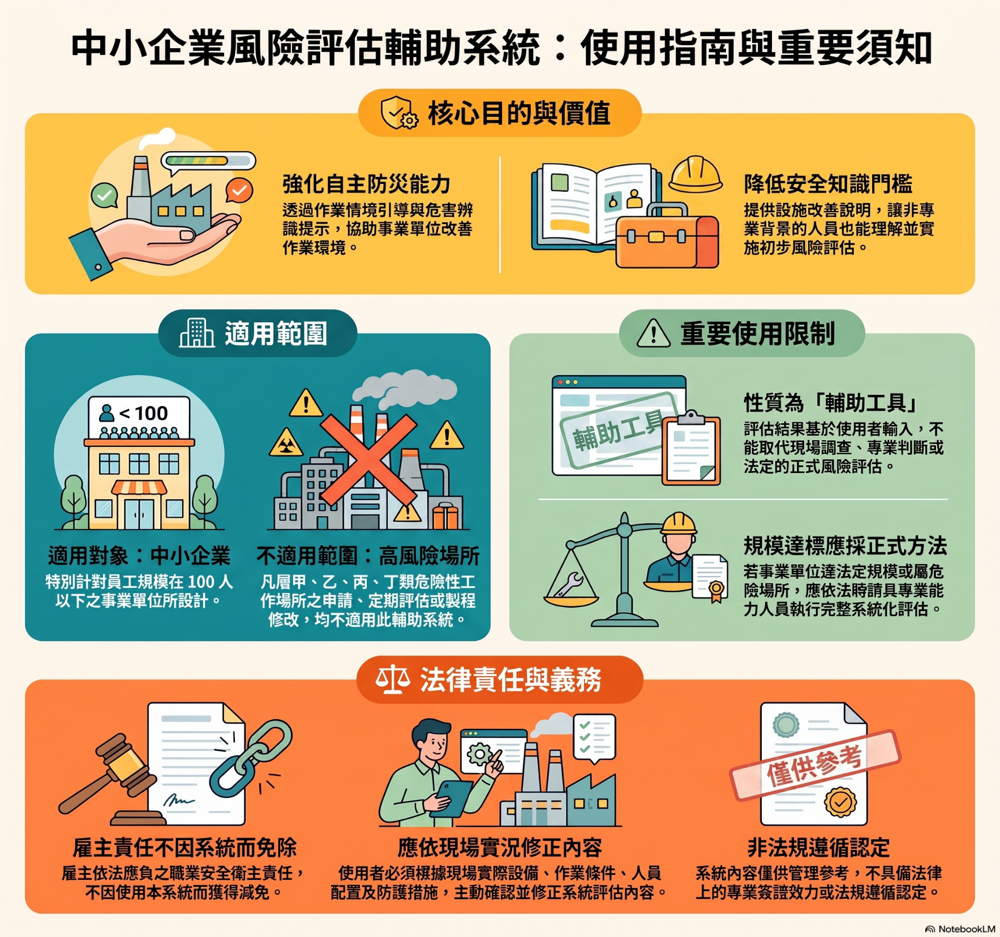
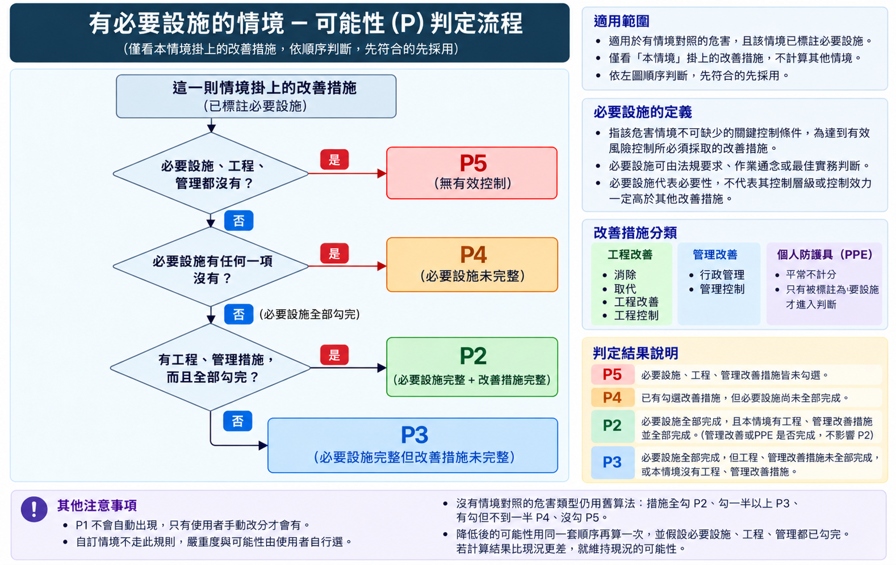
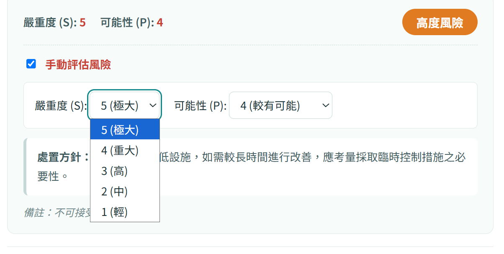
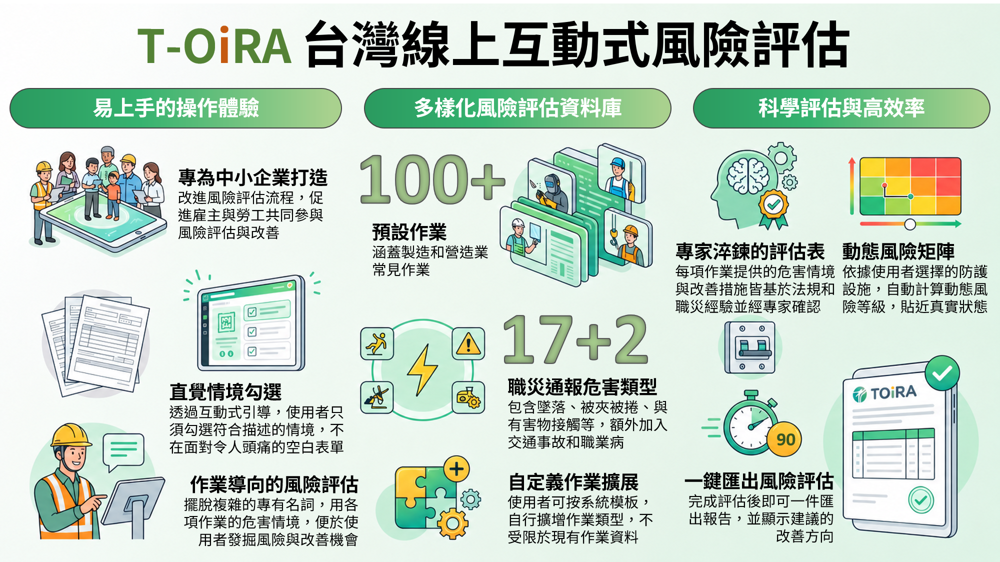
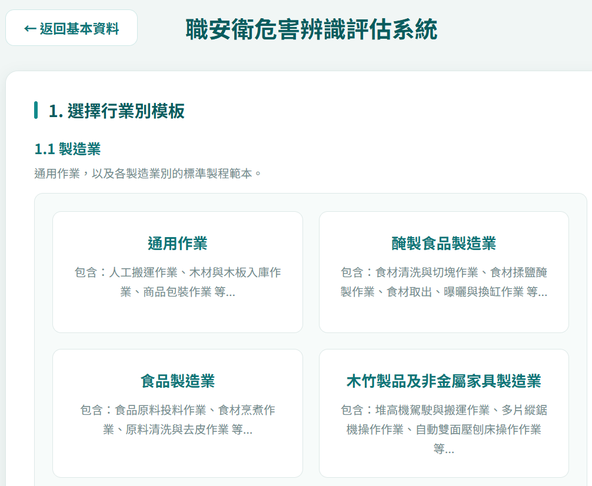
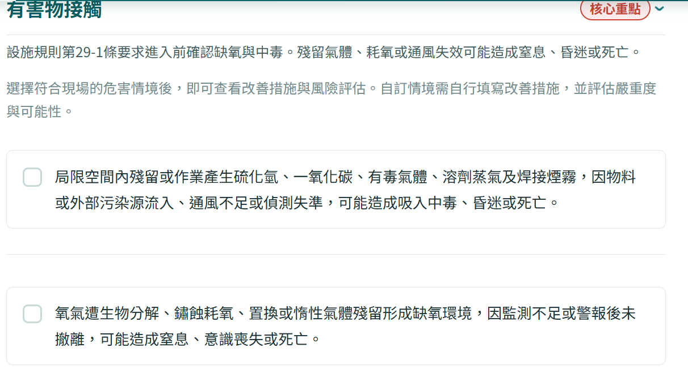

使用協助
常見問答 Q&A
查詢評估方式、改善責任與資料使用說明。
使用方式
4 題Q01 TOIRA 是什麼？適合誰使用？
TOIRA 是台灣線上互動式風險評估輔助工具，以常見作業的具體危害情境，引導使用者確認現有防護措施與應採取之預防設施，協助進行初步、定性的風險評估。
主要協助中小企業與自營作業者降低評估門檻。以員工 100 人以下、較缺乏風險評估專業資源的事業單位為設計重點；仍應由具相關能力的人員依現場條件覆核。
複雜且高風險的作業場所，以及須辦理危險性工作場所申請、定期評估或製程修改的情況，應另依適用要求完成系統化評估。
圖解：使用指南與重要須知展開圖片

點圖放大Q02 如何開始評估一項作業？
填寫公司資料後，依行業挑選作業，或自行從資料庫加入符合現場的項目。評估流程如下：
- 確認作業範圍與實際設備、材料及人員配置。
- 選擇符合現場的危害情境，並補充未涵蓋的危害。
- 勾選已備有且實際有效落實的防護措施。
- 檢視系統風險等級與應採取之預防設施；若手動調整，補上現場依據與備註。
- 確認評估內容後儲存專案，匯出 Excel 或 PDF 報表，並追蹤改善完成情形。
Q03 找不到符合現場的作業或危害，怎麼辦？
Q04 公版內容如何由專家把關？
公版作業資料於建置階段使用 AI 輔助撰寫，須經專家逐筆審查後，才提供正式查詢與評估使用。
審查重點包括作業範圍、危害情境、預防設施、法規與實務的適切性，以及風險分級的合理性。使用者仍須依現場設備與作業條件確認及修正。
風險分級
6 題Q05 風險等級是由 AI 即時計算的嗎？
Q06 嚴重度開關開啟、關閉有何不同？
原型保留比較開關。關閉時採生成時的情境估算；開啟時採 110–114 年（5 年）職災統計與分級規則，公版參考等級為 S2–S5。
立即危險類型採 S5；職業病可恢復採 S4、不可恢復採 S5。
切換開關不會覆寫使用者已設定的手動評估。報表會標示當次嚴重度來源。
Q07 S5 是否代表現場一定有立即危險，必須停工？ 附法條
S5 是本工具的後果嚴重度分級，不等於現場已符合法定的立即危險情事。
認定標準列出墜落、感電、倒塌崩塌、火災爆炸及中毒缺氧等類型；是否有立即危險，仍須依各類型的法定具體情事與現場防護判斷。
現場確有立即危險時，應即停止相關作業並退避，不得等待矩陣評分或改善期限。
立即發生危險之虞認定標準第 2 條｜展開條文全文
有立即發生危險之虞之類型如下：
一、墜落。
二、感電。
三、倒塌、崩塌。
四、火災、爆炸。
五、中毒、缺氧。
Q08 職業病的 S4、S5 如何區分？
本次分級規則為可恢復的職業病採 S4，不可恢復的職業病採 S5。
同一情境若含多種健康後果，應依較嚴重的合理可預見後果評估。可恢復性應由具職業衛生或職業醫學能力的人員確認。
職業病的風險分級供危害辨識使用，不能視為醫療診斷。
Q09 勾選防護措施後，可能性如何改變？
有情境對照且標示必要設施時，只看這一則情境所對應的措施，依下列順序判斷，先符合的條件先採用：
- P5：必要設施、工程及管理措施都未落實。
- P4：已落實部分措施，但仍有任一必要設施未完成。
- P2：必要設施全部完成，且該情境有工程措施、工程措施也全部完成。
- P3：必要設施全部完成，但工程措施未全做，或該情境沒有工程措施。
必要設施可以分屬工程、管理或個人防護；只要標示為必要，就納入是否完成的判斷。一般管理措施及未標示必要的個人防護具，不會改變上述 P2 的判定條件。
有情境對照但未標示必要設施時，依工程／管理措施完成狀況分級，系統自動評分最低為 P3。無情境對照時則按公版措施勾選比例：全做 P2、至少一半 P3、有做但不足一半 P4、未做 P5。
P1 不會自動出現，只能由使用者手動評估。措施須確實有效落實，不能為了降低分數而勾選尚未完成的項目。
圖解：必要設施情境的可能性判定流程展開圖片

點圖放大Q10 「預估處理後之風險」可以當作改善完成證明嗎？
改善與責任
4 題Q11 「現有(已備有)防護措施」應如何勾選？
Q12 「應採取之預防設施」未完成會被處罰嗎？ 附法條
雇主應依實際危害與適用法令實施風險評估，並採取必要的預防設備及措施；本工具的勾選或分數不會免除這項義務。
是否違法或受裁罰，須依未落實的事項、適用法條與現場事實認定。不是按下勾選就自動產生一項新的罰則，也不能以取消勾選規避原有義務。
請將必要設施列入改善計畫，確認負責人、期限、暫時防護與完成查核。
職業安全衛生管理辦法第 12 條之 1｜展開條文全文
雇主使勞工從事工作前，應就工作場所內之建築物、機械、設備、器具、原料、材料等或作業活動及其他可能引起之危害因素實施風險評估，並依評估結果，採取必要之預防設備及措施。
雇主應依其事業單位之規模、性質及前項風險評估結果，訂定職業安全衛生管理計畫，要求各級主管依其職責指揮、監督所屬人員執行；勞工人數未滿三十人之事業單位，得以安全衛生管理執行紀錄或文件代替職業安全衛生管理計畫。
勞工人數在一百人以上之事業單位，應另訂定職業安全衛生管理規章。
第二項職業安全衛生管理計畫，應包括下列事項：
一、機械、設備或器具之管理。
二、危害性化學品之分類、標示、通識及管理。
三、有害作業環境之採樣策略規劃及監測。
四、危險性工作場所之製程或施工安全評估。
五、採購管理、承攬管理及變更管理。
六、安全衛生作業標準。
七、定期檢查、重點檢查、作業檢點及現場巡視。
八、安全衛生教育訓練。
九、個人防護具之管理。
十、健康檢查、管理及促進。
十一、安全衛生資訊之蒐集、分享及運用。
十二、緊急應變措施。
十三、職業災害、虛驚事故、影響身心健康事件之調查處理及統計分析。
十四、安全衛生管理稽核及績效評估措施。
十五、其他安全衛生管理措施。
第二項職業安全衛生管理事項之執行，應作成紀錄，並保存三年。
查核日期：2026/10/11。適用內容以主管機關公告為準。Q13 使用者可以自行調低風險等級嗎？
原型提供手動評估，應依現場事實填寫「調整理由／備註」，說明措施有效性與調整依據。
自行調降者應承擔其調整及作業決策責任。調低分數不代表現場危害已降低，亦不免除法定安全衛生與防護義務。
手動調整的現況值與預估處理後之風險，以及調整說明，會在報表中以紅色標示。
圖解：手動評估操作示意展開圖片

點圖放大Q14 現場有立即危險時，應先填表還是先處置？ 附法條
應先停止相關作業並使勞工退避至安全場所，再依現場程序處置與報告。不得等待填表、評分或改善期限。
勞工執行職務發現立即危險時，得在不危及其他工作者的情況下自行停止作業及退避，並立即向直屬主管報告。
職業安全衛生法第 18 條｜展開條文全文
工作場所有立即發生危險之虞時，雇主或工作場所負責人應即令停止作業，並使勞工退避至安全場所。
勞工執行職務發現有立即發生危險之虞時，得在不危及其他工作者安全情形下，自行停止作業及退避至安全場所，並立即向直屬主管報告。
雇主不得對前項勞工予以解僱、調職、不給付停止作業期間工資或其他不利之處分。但雇主證明勞工濫用停止作業權，經報主管機關認定，並符合勞動法令規定者，不在此限。
查核日期：2026/10/11。適用內容以主管機關公告為準。AI 與資料
4 題Q15 平台在哪個階段使用生成式 AI？
本平台於作業資料建置階段，使用生成式人工智慧輔助撰寫。作業資料須經專家審查後，才提供正式查詢與評估使用。
使用者操作時的風險計算、QA 查詢及報表匯出，採固定規則及既有內容；使用者填寫的資料不提供 AI 讀取，也不用於 AI 再次訓練。
Q16 AI 訓練會不會使我填寫的資料外洩？
使用者填寫的資料與評估作業不提供人工智慧讀取，也不會用於人工智慧再次訓練。
一般評估、QA 搜尋與 Excel／PDF 匯出均在瀏覽器處理，不把填答送交後端模型。
仍請妥善管理裝置、帳號與匯出檔案，避免在共用電腦留下公司資料；不使用 AI 不等於所有資訊安全風險均已消失。
Q17 填答及評估作業會被如何保存與分析？
使用者填寫的資料與評估作業，保留供匿名化之描述性分析使用，例如了解作業類型、防護措施落實情況及風險等級分布；不提供 AI 讀取或再次訓練。
分析前應去除或處理公司名稱、統一編號、聯絡資訊及備註中的可識別內容，並避免由稀少案例辨識特定事業單位或個人。
Q18 QA 查詢會將問題送給 AI 嗎？
報表與保存
2 題Q19 評估資料如何儲存？可以換裝置接續嗎？
按「儲存評估」後，專案保存在目前瀏覽器；公司資料亦可能保留於同一瀏覽器。清除網站資料或更換裝置、瀏覽器，可能無法取得原專案。
原型尚未提供跨裝置同步，請匯出報表保留紀錄。共用電腦使用後，應依單位規範管理或清除留存資料。
Q20 匯出的報表可以直接作為法規符合證明或自動申報嗎？
報表供初步危害辨識、內部管理與改善追蹤參考，不能單獨保證現場安全、符合法令或已完成法定評估程序；本平台也不會自動申報。
可下載 Excel 供事業單位修改內文，或匯出 PDF。每則選取的危害情境會呈現對應的現有防護、風險評估、應採取之預防設施與預估處理後之風險。
目前報表欄名為「現有(已備有)防護措施」及「應採取之預防設施」。手動調整的現況與處理後風險值，以及調整說明，均以紅色標示。
請先由具相關能力的人員確認內容，再依適用要求保存及辦理後續作業；預估處理後的分數仍須經改善查核與驗收確認。
功能與資料來源
7 題Q21 TOIRA 與傳統填寫風險評估表有何不同？
傳統方式需要使用者從作業中辨識危害、判斷風險並提出對策。TOIRA 先提供常見作業、具體危害情境與預防設施，讓使用者依現場逐項確認。
使用者可從行業模板開始，再挑選作業、危害情境與現有防護措施。系統依填答呈現風險及待改善項目，協助雇主與勞工共同參與評估。
現場調查、內容覆核與改善追蹤仍由事業單位完成。
圖解：TOIRA 功能概念圖展開圖片

點圖放大Q22 行業模板沒有完全符合現場時，怎麼辦？
行業模板提供常見作業組合，不能直接代表整間工廠或所有工程的實際情況。可選擇相近的製造業或營造業模板，再增減作業。
若沒有對應模板，可從資料庫自行選擇作業；必要時新增自定義製程、危害情境及預防設施。請確認評估邊界，避免漏掉換料、清潔、維修或異常處置等作業。
自訂情境須自行填寫嚴重度與可能性。模板及作業項目以行業選擇頁與目前資料庫為準。
圖解：行業模板選擇示意展開圖片

點圖放大Q23 每則危害情境如何對應預防設施與報表？
每一則公版危害情境，都有相對應的預防設施。選取情境後，確認該情境對應措施的落實情況，再評估嚴重度與可能性。
報表依選取的情境逐列呈現：危害及可能後果、現有(已備有)防護措施、現況風險、應採取之預防設施，以及預估處理後之風險。
同一作業可能存在多則危害情境。請逐則檢視，不能以其中一則的低風險代表整項作業安全。
Q24 「核心重點」是什麼？其他危害可以不看嗎？
核心重點標示依適用法規或實務經驗，應優先檢視的危害類型，協助使用者先確認關鍵的作業風險。
核心重點不是完整危害清單。其他危害仍可能適用，也可能有資料庫尚未涵蓋的情境，應依現場實況逐一確認並補充。
圖解：核心重點與危害情境示意展開圖片

點圖放大Q25 「必要設施」與工程、管理、個人防護有何不同？
「必要設施」是對該情境不可缺少的關鍵控制條件，可依適用法規、作業通念或最佳實務標註。它表示必要性，不是另一種措施分類。
工程改善、管理控制與個人防護是措施的分類。必要設施可能屬於其中任何一類，標示為必要的個人防護具也須確認落實。
若必要設施尚未完成，應列為待改善，並依現場危害採取適當處置。勾選或調低分數都不能取代必要防護的實際落實。
Q26 公版作業資料如何產生與審查？
公版資料的編製在資料建置階段進行，主要流程如下：
- 界定作業範圍：確認作業名稱、評估邊界及包含的操作步驟。
- 整理作業特徵：從人員、機械、材料、方法、環境及危害等面向整理情境。
- 蒐集參考資料：檢索法規、指引手冊及歷史職災事故，作為內容編製的依據。
- AI 輔助撰寫與合理性檢查：整理具體危害情境及對應預防設施，檢查內容的一致性。
- 專家審查與修訂：逐筆確認內容是否符合安全衛生實務，完成審查後才提供正式查詢與評估。
此流程用於編製公版資料。使用者填寫的資料與評估作業不會送入此生成流程，也不提供 AI 讀取或再次訓練。
Q27 嚴重度的近五年職災統計基準如何產生？
以民國 110–114 年的職災資料為統計窗口，對傷病、失能與死亡等不同後果採加權方式整理，再取五年平均，作為危害類型的嚴重度分級參考。
統計參考分為 S2–S5，並結合立即危險類型及職業病可恢復性的分級規則。這是對危害後果的參考分級，不能直接當作特定工廠的事故發生機率。
原型保留嚴重度比較開關：開啟採統計與分級規則，關閉採生成時估算；手動評估值不受開關覆寫。評估時仍須確認現場情況與措施有效性。
找不到符合的問答
請縮短關鍵字，或改用其他分類查詢。
問答供使用說明與初步管理參考。法規認定應依現場事實與主管機關公告辦理。